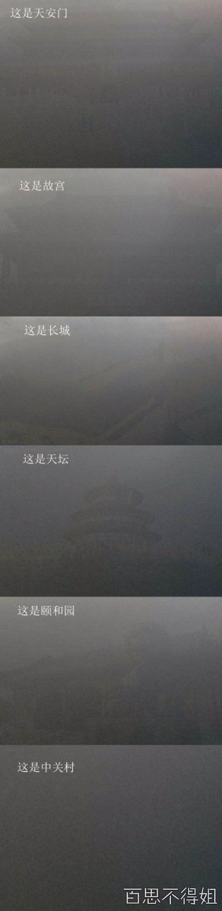
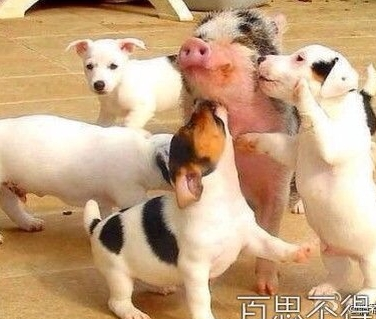

Conversation with 81184027 at Fri 17 Jan 2014 10:56:40 AM CST on 154115835 (webqq)
(01/16/2014 03:28:06 PM) 埃及无雪: :face13::face13::face13:
(01/16/2014 03:28:29 PM) 埃及无雪: 北京欢迎你！
(01/16/2014 04:09:18 PM) 溫存 ら: :face10:
(01/16/2014 03:28:02 PM) 埃及无雪: 【图片未找到】
(11:04:37 AM) 光: 中山先生思想的淵源 中山先生思想，博大精深，其政治哲理有繼承自中國傳統文化的，有 考究世界潮流，而加以擷集其精華的；亦有對西方學者主張，認為不確當者加以批判後，另行建立起其思想架構的；當然，還有就是他本人的獨創之見。故研讀中山 思想，實際上就等如研讀了不少文化史及中西思想家的學說。 現在將中山先生思想的來源，概略分述如下： 一、 繼承自中國傳統文化 中山先生自幼研讀中國古典文獻，對中國傳統文化早有認識。當其揭櫫推翻滿清，建立民國之時，其世界觀、治國理念，更以中國傳統文化為根基。 中國傳統文化，可以說是植根於兩個概念：一個是"大同思想"，另一個則是"行仁政"。 （1） 首先講"大同思想"： 由於中國先祖炎帝與黃帝，均以黃河流域為根基，以後不斷擴大；融 合附近大大小小的部落與部族；故自古以來，中華民族，無論是最初的炎帝、黃帝部族，後來發展而成的華夏系民族，以至秦漢之後形成的漢族，都是不斷擴大，不 斷融合。此種民族的發展，在文化上融和，在民族上和睦，是必須要的條件。故中華民族，乃至中華文化，都以互助互愛為民族發展，文化提升的基本精神。 中山先生反對鬥爭理論，而以"互助"為人類發展的原動力，是有其先天性、歷史性的原因的。 在這樣一個環境與精神發展起來的民族，自然就以"大同世界"為最高的境界，而要達成"世界大同"，所有執掌政事的人，都要存有"公天下"的心態，便成為必 要的條件。 故中山先生經常說"天下為公"、"世界大同"。 在中國的古代文獻中《小戴禮記》裏面有一篇《禮運大同篇》，首句就開章明義地說"大道之行也，天下為公"。之後，所述說的"選賢與能、講信修睦"……"不 獨親其親、子其子"……，"使老有所終、壯有所用、幼有所長"……以至"夜戶而不閉，是謂大同"，都是述說世界大同的狀態及如何達成世界大同的方法。 （2） 再講"行仁政"問題： 中國古代學術自由，諸子百家，均能發揮其學說，並以之奉獻予國君諸侯，冀能展其抱負。 但九流十家之中，始終以儒家為中國歷代文化主流。《漢書藝文志》謂："儒家者流，蓋出於司徒之官，祖述堯舜，憲章文武，宗師仲尼"，可見其來源出自古執掌教化之官員，以堯、舜、禹、湯、文武的古聖帝君為政治上的最高楷模而他們無一不是以"行仁政"而為後世所尊崇。 孔子這位儒家的"集大成"者，承先啟後，成為"萬世師表"。他推廣平民教育，有教無類，眼見世間紛亂，諸侯無道，於是他一面主張建立社會良好制度及秩序，"以禮治天下"，（"禮"，各種合乎"理"的制度），並以"仁政"為政治上的追求目標。 "仁"為儒家學說的中心，是人與人之間的圓滿關係，是人間各種關係中合乎情理之愛，既是行為準則，也是政治理想。 故考查一位施政者，要由他的所作所為是否合乎"仁"？及是否以"仁"為目標、以"仁"為決策的準則？ 在普通人的社會生活中，"仁"是一種親情，是一種合乎人性，自近及遠的一種"愛"的發揚，中山先生經常講"博愛"，也就是將"仁愛"加以發揮，推己及人。 （3） 借鑒古已有之的優良制度： 中國歷史悠久，政治成熟，在兩、三千年前，便已發展出一套非常成 熟的中央與地方官制，這絕非今日西方國家只有短短幾百年歷史可以相比。 中國在夏、商、周的兩千年中，在中央已發展出非常成熟及周詳的中央官制，如天官大宗伯，地官大司徒，此外又有春、夏、秋、冬等官，分管各類政務。地方制 度，除天子自領王畿外，又分封同姓宗室、異姓功臣和先王之後，爵位則有公、侯、伯、子、男各等，土地、兵員各有定制，此外，田制、賦稅，亦有一定的常規。 秦漢以後，中央官制更為完備，有三公九卿，分掌宗室及國家各類政務；地方制度則有郡、縣等，及後來發展起來的州、郡、縣制。而漢朝以後，中央官制中，宰相 的"相權"逐漸形成，就如現代企業中的"總經理"，皇帝等如"董事長"。老闆雖然有最終主權，但一般業務，總經理可以根據情況而決定種種措施，到了隋唐， 丞相權更由"尚書" 轉至"中書"，之後又再轉為"尚書、中書及門下"三省共同行使相權的更嚴密的制度。 A、 中國優良制度之一------監察制度： 中山先生考察中國古代官制，認為有兩種制度是最為可取，其一就是監察制度的重視。 中國自秦朝開始，中央設"三公"，即"丞相"（皇帝之下，政府最高官員）、"太尉"（軍事上最高官員）及"御史大夫"。 此一"御史大夫"在中央位列"三公"，監察中央文武百官，同時亦為各郡"監禦史"的直隸中央的長官。 原來秦統一六國後，廢封建及諸侯國，改立郡縣，郡守（一郡之長）由中央政府任命為一郡之長，其下郡丞、郡尉及監御史負責人，制度類似中央之"三公"；而"監御史"監察地方官常，直接向中央的"御史大夫"負責，可見當時"監察"之重視。 以後中國歷代，對百官之監察都非常重視，亦設專官以司其職。 B、 中國優良制度之二------考試制度： 其次，中山先生認為西方往往形成"分贓"政治，將官職作為助選人員的酬庸，中山先生認為有關國家人事，應以才能為任用的標準，故主張考試，取錄官員之權，另行獨立于政府一般行政體制，這一主張，實亦源自中國固有優良制度。 中國自古重視人才，任用賢才不拘於出身，春秋戰國時代，學術自由，布衣已可被破格任為卿相。漢代設立太學，選各地才俊子弟入學，學成後成為皇帝左右的"郎官"，或派赴地方任職，中央與地方可以對調，社會不同階層亦可對流。 漢代"士人政府"，已使治國人才來源有廣大基礎。 隋唐以後，開科取士，"明經科"、"進士科"，分配甄選學術上、行政上的長才，使治道更加清明進步，故中山先生極度讚揚中國此類古已有之的制度，並加以作為建政的重點與特點。 由上述可知，中山先生雖然考察西方制度及精神，創建自由民主體制，但其主張的制度與西方不盡相同，乃受中國傳統思想之影響。 二、順應西方民主思潮 中山推翻滿清，建立民主共和政體，乃是順應世界潮流。 蓋19世紀末，20世紀初，中國尚在滿清這滿朝文武，儘是顢頇腐化，更無現代化國際視野及世界觀的封閉統治下，西方各國，已先後進入現代化、民主化的階段。 英國自1689年頒佈"人身保護法案"後，人權已經被尊重，君權經已受到限制。 此外，美國獨立運動及法國大革命後，已分別建立起不同的民主及自由體制。 1870年法國及意大利統一，分別成為了強大及現代化的國家。即以日本而言，明治維新後，天皇權肆雖然確立，但同時亦透過政治體制改革，發展出一種日本形式的"君主立憲"制度。 在思想界方面，英國經驗論者，法蘭西斯.培根發揚的一套重視經驗，不向權威低頭的理念及態度。盧梭的社會契約論主張如果政府違反"公共意志"、不能為人民 大眾謀幸福，則人民可起而推翻，另立"契約"的造反有理論。以至孟德斯鳩認為避免政府擅權，最佳辦法是將其權力分割，而各權間互相牽制，便可消弭"獨裁" 政權的形成。 這種一反"君權神授"的歐洲民族國家形成時期的"獨裁"，造反有理的理論，爭取自由，爭取民主，已成為了當時一股銳不可擋的潮流。 中山先生形容這股爭取民主自由的潮流時說："世界民主潮流、浩浩蕩蕩，順之者昌，逆之者亡"。 故中山先生革命的運動及思想的發展，實際上亦只是順應世界潮流。 三、由批判而產生的思想 中山先生對於西方的思想，也不是如清末某些學人所主張的"全盤西化"，"囫圇吞棗"地將好的、不適合的、甚至壞的，也一股腦兒地照單全收。 他對西方啟蒙時代的很多思想家雖然很推崇，認為他們的思想及主張也有很多值得參考的地方，但卻是經過邏輯的思維、歷史的驗證，然後一一予以批判。 最後，取其認為適合的，值得借鏡的，對於一些不合歷史、不合事實或不合中國國情的予以揚棄，並由批判中，形成其可行的適合的主張。 這種例子非常多，舉其大端就有： （1） 以"革命民權"代替"天賦人權"，中山先生認為盧梭的"天賦人權"論，雖然有助於精神凝聚，及為反對獨裁專制者建立理論基礎。但人權源自"天賦"，到底與事實不符，考察歷史，各地民權之所以能得到伸張，全皆經過革命所然，因而主張"革命民權"。 （2） 孟德斯鳩為了避免政府擅權，主張"三權分立"，但中山先生認為如果監察權不獨立於立法機構，人事任命權不獨立于行政機構，極容易產生流弊，於是主張"五權分立"。 （3） 馬克思為鼓動無產階級團結起來，推翻資產階級統治，於是創立階級鬥爭的理論；並以"鬥爭"為人類進步的原動力，作為"唯物史觀"的中心思想。中山先生則認 為"鬥爭"只會破壞，"互助互愛"才可以促使人類進步。於是，創立其"民生史觀"，,認為"歷史是人類求生存的紀錄"，而互助是人類進步的原動力。 四、有自創發明的 中山先生的思想中，有不少是自創發明的。如在哲學上有所謂"一般哲學"及"特殊哲學"。 前者分"形上學"、"人生論"及"認識論"，後者則是各人對不同學術範疇的哲學認識及主張，如"政治哲學"、"教育哲學"、"法律哲學"及"社會哲學"等，相對於科學上的"政治學"、"教育學"、"法律學"及"社會學"。 在"一般哲學"中的"形上學"，主要是探討不具形體的概念的思維，如對宇宙是由甚麼構成的？與及宇宙的運行是如何的等問題，加以探討，前者稱為"本體論"，後者則稱為"宇宙論"。 在"本體論"中，一向存在有"唯物論"與"唯心論"之爭，前者認為構成宇宙本體最基本的是"物質"的微粒；而唯心論則認為宇宙最基本的質料，是具有精神性的單位，或稱為"單子"。 （1）"生元"理論的發明： 中山先生認為：宇宙的基本質料，既不是"物質"，也不是"精神"，而是一種具有生命的"生元"，惟其具有生命，故"生命體"如動物、植物等，才能有生命，再擴而論之，其實宇宙就是一個大生命體。 （2）人性等分說： 很多人強調人類平等，但中山先生認為平等應是人權上的平等、法律上的平等、受教育上的平等、與及發展機會的平等，而不是強求所有的人一律所得平等，成就平等。 因為人的才智與品賦是天生不平等的，有聖賢才智、平庸愚劣之分。社會只應給予每人機會平等，而不應限制各人的成就，亦即是說要"平腳不平頭"。 （3）知難行易說： 在一般人都認為很多事情，知道非常容易，做起來便非常困難，但中山先生卻力排眾議，提倡"知難行易"的理論。這對人心的鼓舞作用甚大，不必要事事講求非經自己鑽研透徹不可，更不必因事事感到困難而畏縮不前。 由上述中山先生的主張，可見他雖然畢生戎馬，奔走於革命，但對各項人生哲理，政治哲學等，都時刻思考，尋找答案，既是真理的探求，亦是為解決革命運動，遭遇到種種問題時的解決辦法。
(11:05:05 AM) 光: http://www.gaogo.com/e_cate/e02_topic/E2_002e.htm
(11:05:08 AM) 心成长-辽宁: 就像一个培训要上万，但是很贫穷，我也交了，我不会后悔，虽然家人不理解，我只默默的瘾受着痛苦的煎熬，没有人的时候真想哭一场，但是既然走这条路我不后悔，我相信我会成功的，虽然暂时不是很理解，我相信他们以后会理解的。
(11:08:02 AM) 光: 最好的培训其实就是读书
(11:09:20 AM) 光: 就像一个培训要上万，但是很贫穷，我也交了，我不会后悔。在国内培训的结果往往会让你大失所望
(11:09:38 AM) 心成长-辽宁: 希望理性看问题，不要用自己主观去看问题
(11:09:57 AM) 光: 说说你受过的有意义的培训
(11:09:59 AM) 光: 我听听
(11:10:16 AM) 光: 所谓理性就是言之有理，言之有据
(11:10:30 AM) 心成长-辽宁: 你在都是自己内心投射
(11:10:37 AM) 心成长-辽宁: 你跟本没有看懂我在说什么
(11:10:44 AM) 光: 不要和我玩空手道
(11:10:57 AM) 光: 说话有证据
(11:15:25 AM) 光: 说话有根据
(11:15:30 AM) 光: 这样说更好
(11:16:54 AM) 埃及无雪: 说话留有余地最好:憨笑:
(11:17:03 AM) 光: 人性等分說： 很多人強調人類平等，但中山先生認為平等應是人權上的平等、法律上的平等、受教育上的平等、與及發展機會的平等，而不是強求所有的人一律所得平等，成就平等。因為人的才智與品賦是天生不平等的，有聖賢才智、平庸愚劣之分。社會只應給予每人機會平等，而不應限制各人的成就，亦即是說要"平腳不平頭"。
(11:17:15 AM) 光: 刚才发那篇文章主要是看到这条
(11:17:12 AM) 溫存 ら: 
(11:17:59 AM) 埃及无雪: 【图片未找到】
(11:18:40 AM) 埃及无雪: 【图片未找到】
(11:19:05 AM) 埃及无雪: 看看这头猪多幸福:D:D
(11:19:14 AM) 溫存 ら: 
(11:19:28 AM) 心成长-辽宁: 其实我们说的想法都是自己内心投射出来的
(11:19:57 AM) 埃及无雪: 温存老学我:D
(11:20:19 AM) 光: 心成长-辽宁: 就像一个培训要上万，但是很贫穷，我也交了，我不会后悔，虽然家人不理解，我只默默的瘾受着痛苦的煎熬，没有人的时候真想哭一场，但是既然走这条路我不后悔，我相信我会成功的，虽然暂时不是很理解，我相信他们以后会理解的。
(11:20:35 AM) 光: 那么你这句话的真实意思是？
(11:21:01 AM) 光: 人的才智與品賦是天生不平等的，有聖賢才智、平庸愚劣之分。
(11:21:08 AM) 光: 人分8等
(11:21:10 AM) 埃及无雪: 心灵，别学传销就行，陷入那个很麻烦
(11:21:25 AM) 光: 你所说的培训指的是哪种呢
(11:21:28 AM) 心成长-辽宁: @埃及无雪 放的吧，不会的
(11:22:38 AM) 光: 聖賢才智 属于先知先觉的人群
(11:22:47 AM) 光: 相对少数
(11:22:58 AM) 埃及无雪: 嗯，好好想好，家人反对你也是有理由，不过决定是靠你自己，做了决定就要加油，不要后悔，好好做一番成绩。
(11:23:29 AM) 光: 平庸属于后知后觉
(11:23:36 AM) 光: 相对多数
(11:23:48 AM) 光: 愚劣属于不知不觉
(11:24:19 AM) 光: 你说的培训大致上指的是针对平庸而言吧
(11:24:35 AM) 埃及无雪: 光，别把话题搞得那么深，可能心灵就是需要一个人倾听，寻找一个坚持自我的理由。
(11:24:50 AM) 光: 哦
(11:25:43 AM) 埃及无雪: 别什么都上纲上线:p:p:p
(11:25:59 AM) 光: :face14:
(01:19:01 PM) pastorqi: 1月17日，2014年的第17天。
愿我们收获活水吗哪，发出对神的感谢赞美。
愿我们跟随主，走荣神、益人、自己得操练的道路
旧约 创世记 35: -36:
诗 篇 15:
箴 言 3:21-26
新约 马 太 12:1-21
有代祷事宜请告知
(01:38:44 PM) 柠檬-杭州: 刘耘博士: 北师大女附中红卫兵贴在被殴打致死的女校长卞仲耘卧室门上的大字报：狗恶霸，卞毒蛇，你他妈的听着，你再敢骑在劳动人民头上耀武扬威，我们抽你的狗筋，挖你的狗心，砍你的狗头。你他妈的别妄想东山再起，我们要断你的孙，绝你的种，砸你个稀巴烂。:!:!:!:!
(10:59:13 AM) The account has disconnected and you are no longer in this chat. You will automatically rejoin the chat when the account reconnects.